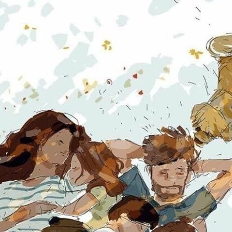
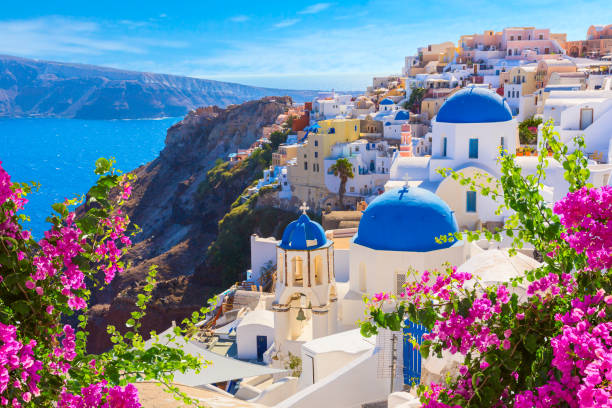

Pessoal
Já meu sonho pessoal é ter uma família, com ao menos dois filhos e vários cachorros, ter uma casa confortável e aconchegante, ter amigos verdadeiros e leais, e ser feliz sendo hexacampeão mundial.

Meu sonho profissional é me tornar uma profissional de tecnologia, ter uma carreira sólida e ter oportunidade de trabalhar com projetos que realmente façam a diferença na vida das pessoas. Quero crescer profissionalmente, experimentando diferentes áreas da tecnologia, continuar aprendendo e ver, no futuro, tudo que construí e sentir orgulho e paz no coração.
Já meu sonho pessoal é ter uma família, com ao menos dois filhos e vários cachorros, ter uma casa confortável e aconchegante, ter amigos verdadeiros e leais, e ser feliz sendo hexacampeão mundial.

Meu sonho é conhecer a Itália para vivenciar de perto sua história, arquitetura e cultura. Quero conhecer cidades como Roma, Florença e Veneza, experimentar a culinária italiana e conhecer lugares que sempre admirei por fotos e filmes.

Tenho muita vontade de conhecer a Grécia por suas paisagens incríveis, praias e construções históricas. Seria especial conhecer Santorini e Atenas, além de descobrir um pouco mais sobre a história e a mitologia grega.

A França também está na minha lista de sonhos, principalmente Paris. Quero conhecer a Torre Eiffel, caminhar pelas ruas da cidade, visitar museus e aproveitar a atmosfera francesa. Seria uma experiência inesquecível conhecer pessoalmente lugares que sempre vi tão de longe.